本章回顾
回忆 😌
- 这个hollywood真的很酷
- 👻 退出的话用 ctrl+c
- 回到原来的 shell 用命令 zsh
- 下面的关于 cpu、日期等信息仍然保留
- 用这个当做屏保
- 无意中让 MM 看看
- 哈哈！
- 目前我们只会安装软件包
- 如何删除软件包呢？🤔
dpkg管理软件包
# dpkg debian 本地包管理
dpkg --list
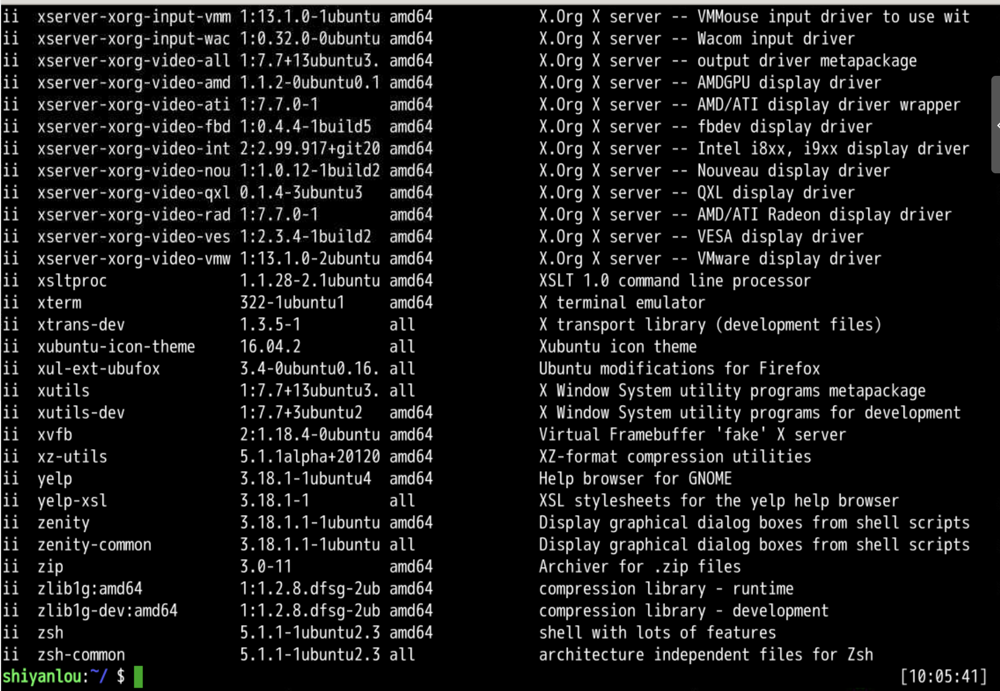
more
# 管道送到 more
dpkg --list | more
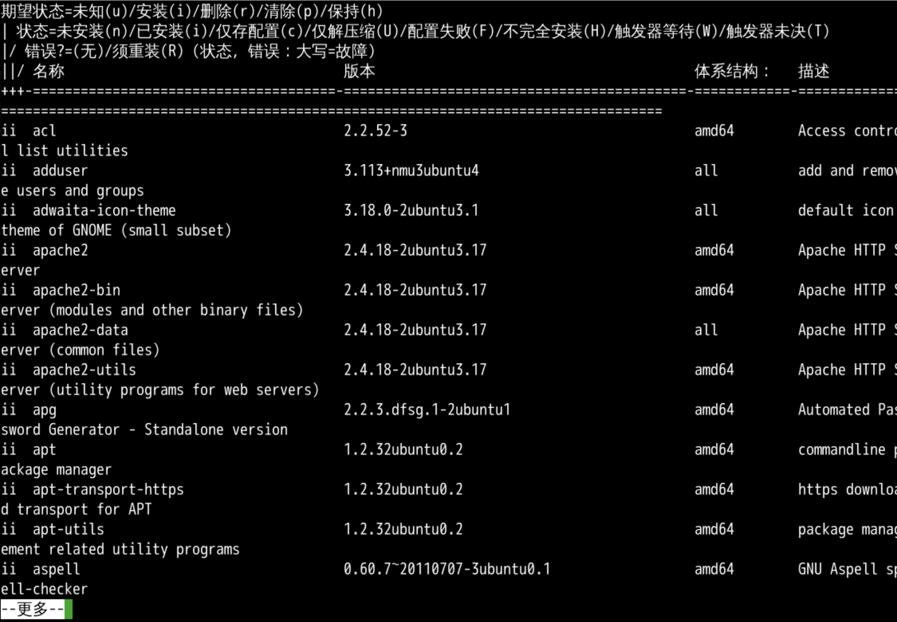
查询手册
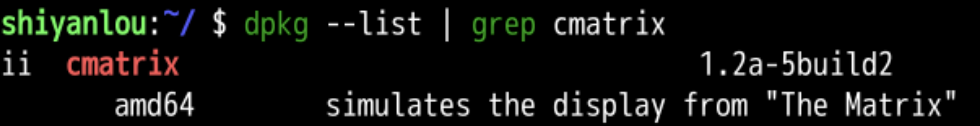
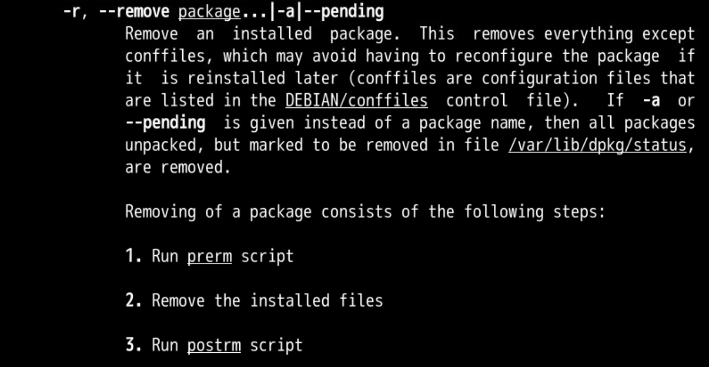
拒绝
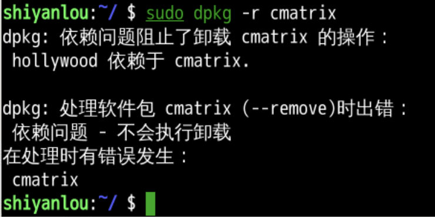
- hollywood基于cmatrix
- 所以不让删
- 这就是依赖关系
- 那我们先删hollywood
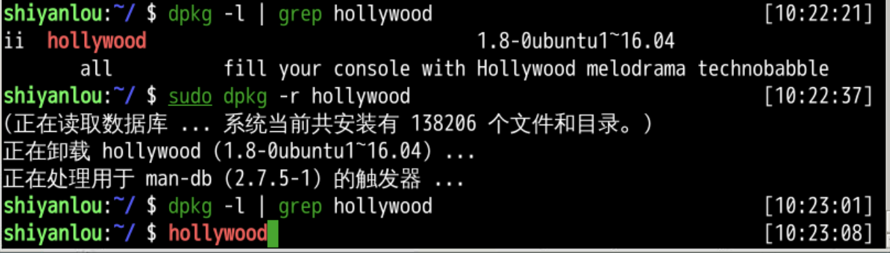
- 用dpkg删除不难
- 可以用新一代的apt删除应用么？
- 先关闭环境我们重开一下
apt 高级软件包管理
sudo apt list --installed
- 从可更新列表里面发现了 firefox
- 如何只找firefox?
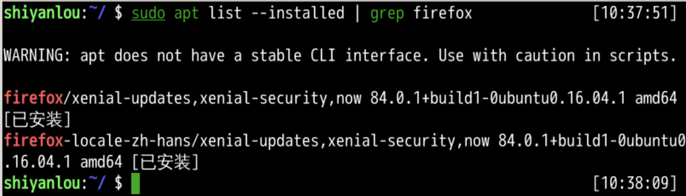
- grep就是再输出的文本中筛选后面的文本firefox
- 观察firefox版本
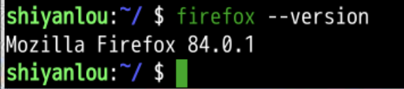
本地软件包升级 📦
- 指定安装 firefox
- 由于实验楼环境中已安装了 🦊 firefox
- 安装可以完成升级么?
- apt 尝试帮我们安装本地认为的最新的firefox
- grep 是文本查找工具
- grep firefox 是在文本中搜索 firefox
- | 起到管道作用
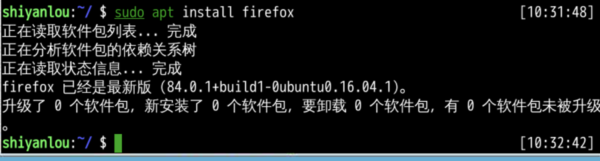
更新源
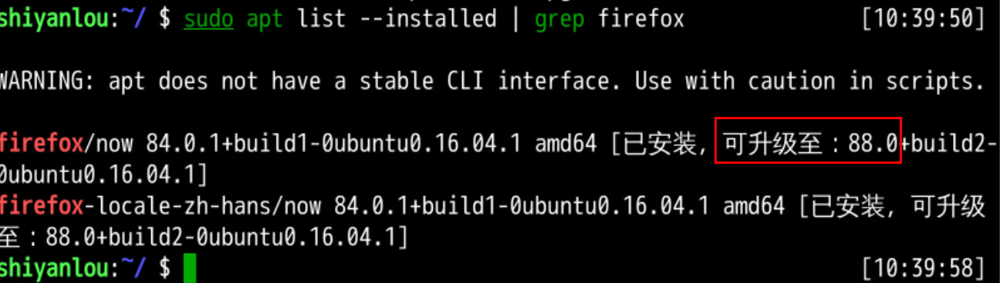
- 更新完了告诉我们firefox可以升级了
- 尝试升级
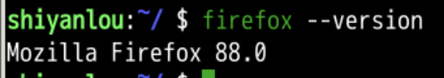
全升级
sudo apt list --upgradable
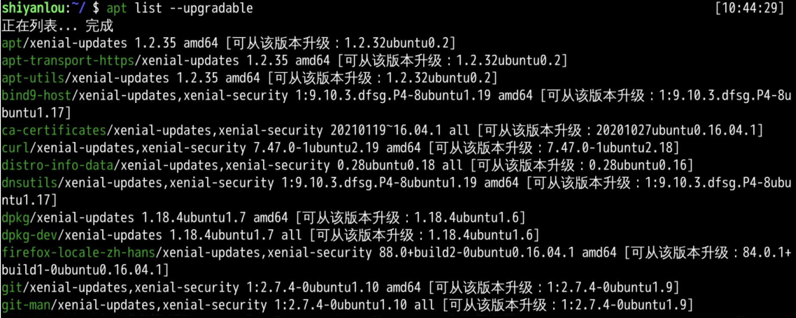
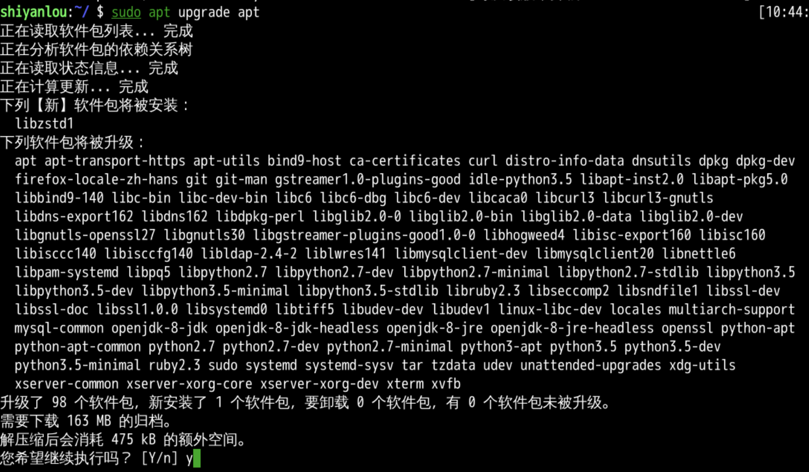
先删再装
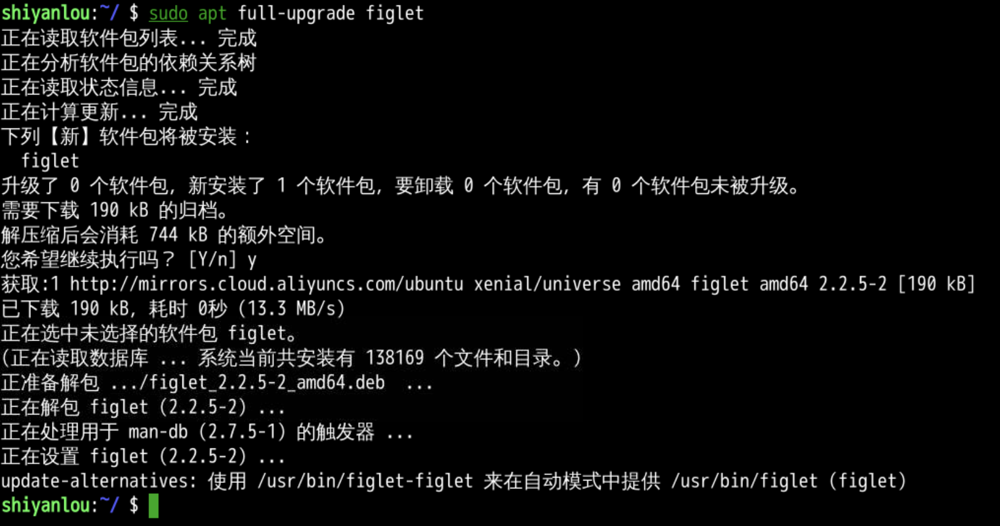
删除
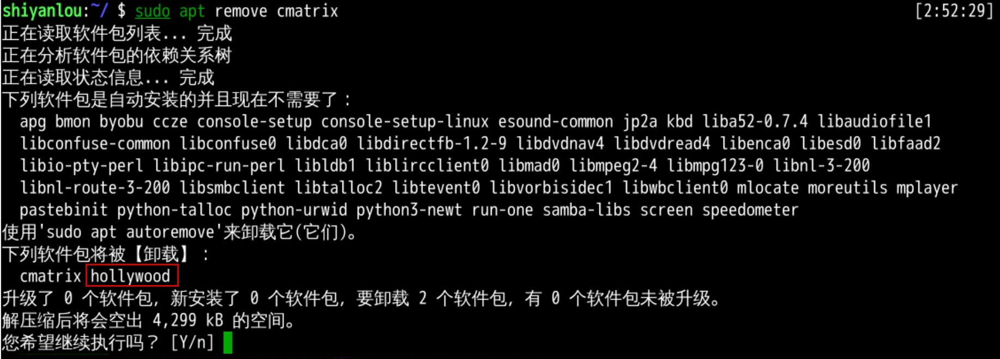
- apt会帮我们把基于cmatrix的hollywood也删除...
- 这个最好还是看清楚
- 问明白再删
- 还有什么方法更好的管理应用吗？🤔
aptitude
这软件包可以管理 apt, 首先要下载：🤪
sudo apt install aptitude
界面
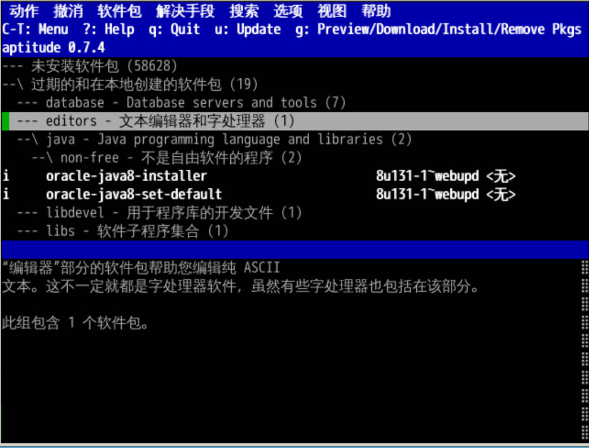
- / 搜索
- ? 帮助
- q 退出
- g 预览/下载/安装/移除
- u 升级
- ctrl+t 调出菜单
- 里面还有个扫雷子游戏
- 点开之后可以查询软件的信息
- 但是还是感觉命令行apt更方便
总结 🤨
- 软件包工具 🔧 是
- dpkg
- 查看
- dpkg --list | grep cmatrix
- 卸载
- apt
- 还有个专门管理软件包的
- 下次玩什么呢？🤔
- 下次再说！👋